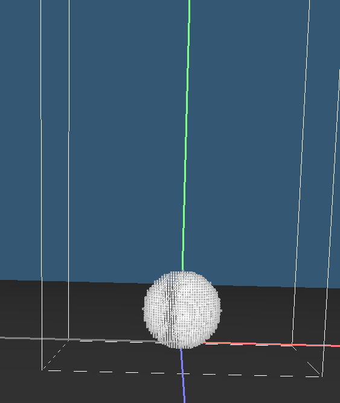
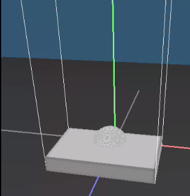
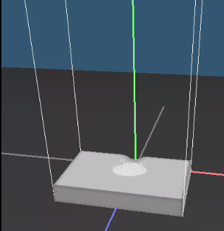
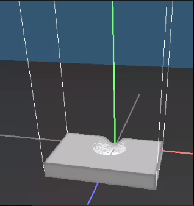

In this project, we employed the Material Point Method (MPM) to simulate snow behaviors. Our approach
involved the development of a 3D grid-based system to manage the motion and interactions of individual snow
particles. Initially, all particles are rasterized onto the grid mesh, enabling the computation of particle
densities and volumes based on their respective gridnodes. Subsequently, if there is a collision between the
snow object and its environment, we update relevant values of each gridnode to reflect the impact of the
collision. Finally, we transfer the updated data from the grid back to the individual snow particles,
allowing for the adjustment of their positions accordingly. We then create multiple scenarios with different
material parameters to test on our implementation and see how the settings influence behavior of snow. Our
code is based on OpenGL.
Technical Implementation
The general idea is based on the paper “A material point method for snow simulation” (A. Stomakhin et al.,
2012). Below includes the implementation details.
Data Structures
GridMesh:
This is our grid, which stores the basic information a grid contains: the
size of
the
grid in three dimensions, the number of GridNodes in three dimensions, and a vector of GridNodes. It
also
includes some other useful information, including a SnowParticleSet and a bounding box of the grid.
We
initialize the GridMesh and construct a vector of GridNodes based on the size of the bounding box
and the
size of each GridNode. The material point method is mainly implemented in this class.
GridNode:
This represents each node on the GridMesh, containing key attributes
including a
GridNode's mass, velocity at the last timestep, velocity at the current timestep, index on the
GridMesh, and
the force applied on it.
SnowParticle:
This structure is the snow particle on our screen. It has velocity,
mass,
density,
volume, material, FLIP velocity, PIC velocity, deformation gradients, weights of its surrounding
GridNodes,
and the singular value decomposition of its gradient. The FLIP and PIC are two grid-based techniques
to
simulate the fluid behavior. In MPM, we combined them to simulate to update each particle’s
velocity.
SnowParticleSet:
We store all the particles on the screen in a SnowParticleSet, and
it
contains a
maxVelocity attribute, which is a limit of the maximum velocity that each particle can achieve.
SnowParticleMaterial:
This structure specifies the material of a particle. It stores
a
number of
features the different materials would have. These features determine how the snow particles behave
when
colliding with the environment.
SimDomain:
This is where we do all the simulations. This simulator calls all 10
steps of
the snow
simulation listed in the paper, which are detailed below.
Material point Method
Step 1: Build a grid and construct all grid nodes in the grid. Rasterize particle data to
grid
nodes.
Each particle affects its surrounding 64 nodes (4 in each direction). Properties such as
velocity and
mass are transferred from particles to those nodes.
Step 2: Calculate the density and volume of particles by estimating each grid node's
density.
For each
particle, take the weighted mass of its neighboring nodes. Estimate a particle's density by
dividing the
accumulated node mass by node volume, ensuring the value of density is relative to the
properties of a
single node. Compute a particle's volume by dividing its mass by its estimated density.
Step 3: Compute stress-based forces applied on grid nodes. Compute stress experienced by
snow
particles
under deformation considering both elastic and plastic stresses.
Step 4: Update the explicit velocity of each grid node. Since the grid is never deformed
(the
grid
nodes' positions are always fixed), the velocity update represents the position update of
Eulerian grid
nodes.
Step 5: Handle grid-based collisions. Though nodes are never moved, assume each node
moves a
small
distance from its fixed position with its current velocity in a timestep. Check if the node at
its
temporary position collides with the bounding box (the environment). Apply dynamic friction to
the
relative velocity and transform the relative velocity after collision back into world
coordinates.
Step 6: Solve the linear system and calculate the implicit velocity update (PS: Since we
do not
have
enough time to implement this part, we simply set updated velocity of each node at the current
timestep
to explicit velocity).
Step 7: Update the deformation gradient. Compute the singular value decomposition of the
elastic
part of
the deformation gradient. Update both elastic and plastic components of the deformation gradient
based
on the SVD.
Step 8: Derive the FLIP velocity and PIC velocity of the particles by computing two
different
kinds of
weighted sum of grid node velocities. PIC velocity is purely based on grid node velocities at
the
current timestep, while FLIP velocity would rely on node velocities at the current timestep and
the
previous timestep. The particle's new velocity would be a weighted sum of the FLIP and PIC
velocities.
(According to the paper, we usually choose alpha = 0.95).
Step 9: Handle the particle-based collision. This step is pretty similar to step 5,
except that
now we
work on the particle values. Again, check if the particle collides with the bounding box by
computing
its temporary position with its velocity. If collision happens, compute the relative velocity,
transform
back to the world space, and update the particle's velocity.
Step 10: Finally, update each particle's position based on its updated velocity.
Problems & How we solved them
Our rasterization of particles didn't behave as expected. Positions were updated incorrectly and the snow
object stopped moving in the air. We spotted errors in our implementation of rasterization - we mistakenly
reset node indices to zero each time while we should only reset properties like mass, velocity and force. We
also revised the weighting of grid nodes so that it's computed correctly.
The volume and density of particles were miscomputed at first. We found the wrong index of corresponding
nodes, updating some particle densities to zero. This leads to infinite volumes. We solve this problem by
revisiting the implementation, printing all particle values and testing places that could go wrong.
Unexpected behavior of collision. At first we didn't take the normal force applied to particles when they
collide with the surface into consideration. This caused the inability for our snow objects to stay on the
ground. To address this issue we modified our step 4 which updates the velocity of grid nodes. We added the
normal force to nodes on the surface (position on y-axis = 0) which combined with original gravity led to a
zero net force. After modification our snow objects can stand still when no other forces are applied, and
when dropped with a non-zero velocity the collision becomes more realistic.

One snow ball standing on the ground
Incorrect update of node velocities. At first, we were trying to compute every node velocity at the previous
timestep. However, this would lead to undefined velocity values, since the grid is much bigger than the snow
object, which means not every grid node would have particles nearby.
Optimization - we added a structure called effective nodes to the grid mesh, which contains all the relative
nodes needed in iteration so we don't have to go through all the nodes. Our computation time has improved by
approximately 20% compared to previous implementation.
Result



Video
Two snowballs collide in the air.
A snow ball falls on a ground with snow.
A snow ball falls on a ground without snow.
Add a upward velocity after colliding the ground.
Limitation
Our project is run on our own computer. The rendering is slow, which results in choppy videos.
We ignore the friction in air when the snow object is falling down.
We ignores the implicit velocity update resulted from the elasto-plastic response.
Reflection
We should write the design document before implementing the structures. When doing the project,
we
sometimes
found that we were confused with which values should be stored in each structure, and we spent
some
time
fixing our formatting after we finished implementing everything.
We should write more comments, explaining what the code means and what we need to do next. We
wasted
some
time understanding our own codes since we forgot what we did before.
Incorporating sanity checks during project implementation is crucial. We discovered that
debugging
multiple
components simultaneously was time-consuming and challenging. Had we conducted sanity checks
throughout,
we
could have pinpointed errors sooner, preventing them from escalating as we progressed.
Contribution
We did most of the coding parts together. Below are details about each group member's
contribution.
Chuyang Xiao: Work on the formula of material point method and organize the algorithm's
pipeline. Work
on
the code in Grid.cpp. Help debug segmentation fault and
weird snow behavior. Generate videos of some snow simulation and write part of the report.
Reference
Stomakhin, A., Schroeder, C., Chai, L., Teran, J., Selle, A. 2013. A Material Point Method
for
Snow
Simulation. ACM Trans. Graph. 32, 4, Article 102 (July 2013), 12 pages. DOI =
10.1145/2461912.2461948
Our Codebase: https://github.com/Eydcao/Yan-CG-SnowSim/tree/master.
We used some files in this repo and made revisions to SnowParticle.hpp, SimDoman.hpp, main.cpp. All contents
in
for setup Grid.hpp, Grid.cpp, SnowParticle.cpp, and SimDomain.cpp are written by ourselves.